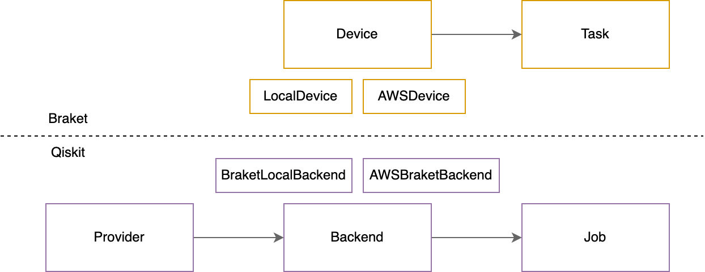

Tutorial: Qiskit-Braket provider overview¶
[64]:
import os
from qiskit.algorithms import VQE
from qiskit.opflow import (
I,
X,
Z,
)
from qiskit import transpile
from qiskit.circuit.random import random_circuit
from qiskit.visualization import plot_histogram
from qiskit.algorithms.optimizers import SLSQP
from qiskit.circuit.library import TwoLocal
from qiskit.utils import QuantumInstance
from braket.aws import AwsQuantumJob
from qiskit_braket_provider import AWSBraketProvider, BraketLocalBackend
Qiskit to Braket mapping¶

Access Braket devices from Qiskit¶
Provider class to access AWS devices. Local simulator to use Braket SDK local simulator.
[8]:
provider = AWSBraketProvider()
backends = provider.backends()
backends
[8]:
[BraketBackend[Aspen-10],
BraketBackend[Aspen-11],
BraketBackend[Aspen-8],
BraketBackend[Aspen-9],
BraketBackend[Aspen-M-1],
BraketBackend[IonQ Device],
BraketBackend[Lucy],
BraketBackend[SV1],
BraketBackend[TN1],
BraketBackend[dm1]]
[33]:
# local simulator
local_simulator = BraketLocalBackend()
# remote simulator
aws_statevector_simulator = provider.get_backend("SV1")
# devices
ionq_device = provider.get_backend("IonQ Device")
rigetti_device = provider.get_backend("Aspen-M-1")
# queries
online_simulators_backends = provider.backends(statuses=["ONLINE"], types=["SIMULATOR"])
online_simulators_backends
[33]:
[BraketBackend[SV1], BraketBackend[TN1], BraketBackend[dm1]]
Running circuits on AWS devices¶
[20]:
# generate random circuit
circuit = random_circuit(6, 20, seed=42)
circuit.draw(fold=-1)
[20]:
┌───┐ ┌───┐ ┌──────────────────────────┐┌──────────────┐ ┌─────────────┐ ┌───┐ ┌───────────────────┐┌────────────┐┌────────────┐
q_0: ───┤ T ├────────┤ S ├───────────────────X───■───────────■──────┤ U3(4.2086,2.7467,5.2319) ├┤ Rx(0.046259) ├──────────────────────────────────■────────────────────────────────────────X───────────■───────────┤ Ry(0.95701) ├────┤ Y ├───────■─────────■─────────────────────────────────────────■───────────────────────■───────┤ U2(3.0304,4.9181) ├┤ Rz(1.6775) ├┤ U1(4.2238) ├────────────────────────────────────────────────────────■────────────
┌──┴───┴───┐ └───┘ │ ┌─┴─┐ │ └──────────────────────────┘└──────────────┘┌─────┐┌────────────────────────┐ │ ┌──────────────────────────┐ │ │ └┬────────────┤ └───┘ │ │ ┌───┐ │ │ └───────────────────┘└─────┬──────┘└────────────┘┌─────┐ ┌────────────┐ │
q_1: ┤ U1(6.13) ├────────────────────X───────X─┤ X ├─────────┼───────────────────X─────────────────────X────────┤ Tdg ├┤ U3(2.96,3.5515,4.8066) ├─┼───────────┤ U3(0.36633,1.768,1.8447) ├─┼───────────■────────────┤ Rz(2.8033) ├─■──────────────┼────■────┼─────────────┤ T ├───────────────────■───┼───────────────────────■─────────────────■────────────────┼─────────────■───────┤ Sdg ├─────────────────────────────┤ Rz(5.2137) ├──────┼────────────
└──────────┘┌────────────┐ │ │ └─┬─┘ │ │ │ ├─────┤└───────────┬────────────┘ │U1(3.4782) └──────────┬───┬───────────┘ │ ┌─┴─┐ └─────┬──────┘ │ZZ(0.74145) │ │ │ ┌──────────┴───┴───────────┐┌───┐ │ │ │ │ │ ┌─┴─┐ └┬───┬┘ └─────┬──────┘ │
q_2: ─────X──────┤ Ry(4.0455) ├──────┼───■───┼───┼───■───────┼───────────────────X─────────────────────X────────┤ Sdg ├────────────┼──────────────■──────────────────────┤ Z ├─────────────┼─────────┤ X ├────────────────■────────■──────────────┼────■────┼──┤ U3(1.9224,3.6393,1.1107) ├┤ Y ├──┼───┼─────────────■─────────┼─────────────────■────────────────┼───────────┤ X ├──────┤ X ├────────────────────────────────────┼─────────────┼─────────■──
│ └───┬───┬────┘ │ │ │ │ │ │ │ ┌───┐ ├─────┤ │ ┌───┐ └───┘ │ ├───┤ ┌───┐ │ ┌─┴─┐ │ └──────────────────────────┘└─┬─┘ │ │ ┌─┴─┐ │ │ └─┬─┘ └───┘ ┌───────────────────────────┐ │ │ ┌─┴─┐
q_3: ─────┼──────────┤ T ├───────■───┼───┼───■───┼───X───────┼───────────────────■───────────────────┤ X ├──────┤ Tdg ├────────────■─────────────────┤ Z ├─────────────────────────────────┼─────────┤ H ├──────────────┤ X ├───────────■─────────┼──┤ X ├──■────────────────────────────────■────┼───┼───────────┤ Y ├───────┼─────────────────■────────────────■─────────────┼──────────────┤ U3(4.8296,0.67696,5.7555) ├──────┼─────────────┼───────┤ Y ├
│ └───┘ │ │ ┌─┴─┐ │ │ ┌─┴─┐ ┌───┐ └───┘ ├─────┤ └───┘ │ └─┬─┘ └─┬─┘ │ ┌─┴─┐└───┘┌─┴─┐ ┌─┴─┐ │ └───┘ ┌─┴─┐ ┌─────┴──────┐ ┌───┐ │ ┌───┐ └─────────────┬─────────────┘ │ ┌─────┴──────┐└───┘
q_4: ─────■──────────────────────┼───X─┤ X ├─────■───┼─────┤ Y ├───────────────┤ T ├──────────────■─────────────┤ Tdg ├────────────────────────────────────────────────────────────────────■───────────■──────────────────■─────────────■───────┤ X ├─────┤ X ├─────────────────────────────────┤ X ├─┼─────────────────────┤ X ├─────────┤ Rz(3.7128) ├───────┤ S ├───────────┼────────┤ S ├───────────────┼────────────────────┼───────┤ Rz(1.9926) ├─────
│ ┌─┴─┐ └─┬─┘ │ ┌───┴───┴───┐ ├───┤ │ZZ(4.2882) └┬───┬┘ │ ┌────────────────────┐ │ ┌─┴─┐ └─┬─┘┌───┐└───┘ └───┘ │U1(2.6126) ┌───┐┌────┴───┴────┐ └────────────┘ └───┘ │ └───┘ │ │ └────────────┘
q_5: ─────X────────────────────┤ H ├─────■───────────X─┤ Ry(6.079) ├───────────┤ Z ├──────────────■──────────────┤ S ├─────────────────────────────────────────────────────────────────────X─┤ U2(0.1427,0.56579) ├───────■───────────┤ X ├───────■──┤ Z ├────────────────────────────────────────────■───────────┤ X ├┤ Rz(0.51981) ├─────────────────────────────────────────■────────────────────────────■────────────────────■──────────────────────────
└───┘ └───────────┘ └───┘ └───┘ └────────────────────┘ └───┘ └───┘ └───┘└─────────────┘ [35]:
# transpile circuit
transpiled_circuit = transpile(circuit, backend=ionq_device, seed_transpiler=42)
transpiled_circuit.draw(idle_wires=False, fold=-1)
[35]:
global phase: 0.90525
┌──────────┐ ┌───┐ ┌───┐ ┌─────┐ ┌───┐ ┌───┐ ┌───┐┌─────┐┌───┐ ┌───┐ ┌───┐ ┌───┐ ┌───┐ ┌─────┐┌───┐ ┌────────────┐┌────────────┐┌────────────┐ ┌───┐ ┌───┐ ┌───┐┌─────┐┌───┐ ┌───┐ ┌───┐ ┌─────────────┐ ┌───┐ ┌───┐ ┌───┐┌─────┐┌───┐┌────────────┐ ┌───┐ ┌─────────────┐ ┌─────────┐ ┌─────────────┐ ┌───┐┌────────────────────────┐┌───┐┌─────────────┐
q_0: ──┤ Rz(3π/4) ├───────────────────────────────────────────────────────────────────────────────────────────■───────┤ H ├───┤ X ├─────┤ Tdg ├──┤ X ├─┤ T ├─┤ X ├┤ Tdg ├┤ X ├─┤ T ├──┤ H ├────────■─────────■────────────────────────────────■────┤ T ├────────────┤ X ├─┤ Tdg ├┤ X ├──────────────■──┤ Rz(2.1395) ├┤ Ry(2.0919) ├┤ Rz(1.3684) ├─────────────────────────────────────────────────────────────────────────────────────────────────────────────────────────────■────────────────────────■─────────────────────┤ X ├───────────────────────────────■───────────────────────────────■───┤ T ├──────┤ X ├┤ Tdg ├┤ X ├─────┤ X ├───────■───────────────────────────────────────────■─────■───┤ T ├───■──────┤ Ry(-2.1846) ├─────────────────────────────────────────────────────────────────────────────────────────────────────────────────────────────────────────────■──────────────────────────■───────────────■───┤ T ├────────■──────────────────■─────────────────────────────────────■───┤ T ├──────┤ X ├┤ Tdg ├┤ X ├┤ Rz(1.3063) ├───────────────────■────────────────────────■─────────■──────────────────────────────■────■───┤ T ├────────────■────────────┤ Rz(-1.3651) ├───────┤ Ry(π/2) ├───────┤ Rz(-2.4141) ├───────────────┤ X ├┤ Rz(-0.838728781856755) ├┤ X ├┤ Rz(-2.0594) ├────────────────■─────────────────────────────────────■──────────────────────────────────────────────────────────────────────────────────────────────────────────────────────────────────────────────────────
┌─┴──────────┴─┐ ┌─┴─┐ └───┘ └─┬─┘ └─────┘ └─┬─┘ └───┘ └─┬─┘└┬───┬┘└─┬─┘ ├───┤ ┌┴───┴┐┌───┐┌─┴─┐┌───┐┌─┴─┐┌─────┐ ┌───┐┌───┐ ┌─┴─┐ ┌┴───┴┐┌───┐┌───┐ └─┬─┘ └┬───┬┘└─┬─┘ │ └────────────┘└────────────┘└───┬───┬────┘ ┌───┐ ┌───┐┌─────┐┌───┐ ┌───┐ ┌──────────────┐ │ ┌───┐ ┌────────────┐ │ ┌───────────┐ ┌───┐└─┬─┘┌──────────────┐┌───────────┐ │ ┌─────────────┐ │ └───┘ └─┬─┘└─────┘└─┬─┘ └─┬─┘ │ ┌───┐ │ ┌─┴─┐┌┴───┴┐┌─┴─┐┌───┴─────────────┴────┐┌───┐┌───────────────────────┐ ┌───┐ │ │ │ ├───┤ │ ┌───┐ │ │ └───┘ └─┬─┘└─────┘└─┬─┘└────────────┘ │ │ │ ┌───┐ │ ┌─┴─┐┌┴───┴┐ ┌─┴─┐ └────┬───┬────┘ └──┬───┬──┘ └────┬───┬────┘ └─┬─┘└────────────────────────┘└─┬─┘└─────────────┘ │ ┌───┐ │ ┌───┐ ┌─────┐ ┌───┐┌────────────┐ ┌───┐┌───────────────────────┐ ┌───┐
q_1: ┤ Rz(-0.15317) ├────────────────────────────────────────────────────────────────────────────X──────────┤ X ├───────────────■──────────────────┼───────────■───┤ T ├───┼───┤ X ├─┤ Tdg ├┤ X ├┤ X ├┤ H ├┤ X ├┤ Tdg ├──────────┤ X ├┤ T ├─┤ X ├─┤ Tdg ├┤ X ├┤ T ├───┼────┤ H ├───┼────────────────┼──────────────────────────────────┤ X ├────────────────────■─────────────────────────────■───┤ T ├───────────┤ X ├┤ Tdg ├┤ X ├─────┤ X ├──────────X────┤ Rz(-0.15782) ├──┼──┤ X ├─┤ Rz(2.1041) ├──┼──┤ Ry(-1.48) ├─┤ X ├──┼──┤ Rz(-0.28426) ├┤ Ry(1.712) ├──┼──┤ Rz(0.87374) ├──■───────────┼────────────────┼───────────┼─────────┼─────────┼─────────────────────────■────────┤ T ├────┼───┤ X ├┤ Tdg ├┤ X ├┤ Rz(1.40164127769636) ├┤ X ├┤ Rz(-1.40164127769636) ├─┤ X ├──■────────────────────────────────────────────────────────────────────────────────────────────■────┼─────────────────────■────┼───────■───────┼───┤ T ├───■────┼──────┤ T ├───────┼─────────────────────────────────────┼────────────────┼───────────┼────────■─────────────────────■────┼────────────────────────┼─────────┼──────────────────■───┤ T ├───┼──┤ X ├┤ Tdg ├─────────┤ X ├───────────────┤ H ├───────────────┤ X ├───────────────┤ H ├────────────■─────────┼──────────────────────────────┼─────────────────────────────────┼──────────────■──────────────┤ T ├───┼──────────────────┤ X ├──┤ Tdg ├──┤ X ├┤ Rz(1.0361) ├────────────────────────────────────────────────────┤ X ├┤ Rz(-2.60686136104895) ├─────┤ X ├─────
└──────────────┘ ┌───┐┌───┐┌─────┐┌───┐┌───┐┌───┐┌─────┐┌───┐┌───┐ ┌───┐ │ ┌───┴───┴────┐ │ └───┘ │ └─┬─┘ └─────┘└─┬─┘└───┘└───┘└───┘└┬───┬┘ └─┬─┘└───┘ └───┘ └─────┘└─┬─┘└───┘ │ └───┘ │ │ ┌───┐ └─┬─┘ ┌───┐ ┌─┴─┐ ┌─────┐ ┌───┐ ┌───┐┌─┴─┐┌┴───┴┐┌───┐┌───┐└─┬─┘└┬───┬┘└─┬─┘ └─┬─┘ │ └───┬─────┬────┘┌─┴─┐└─┬─┘┌┴────────────┤┌─┴─┐├───────────┴┐└─┬─┘ │ └─┬─────────┬──┘└───────────┘ │ └─────────────┘┌─┴─┐┌─────┐ │ │ │ │ ┌─┴─┐ ┌───┐ ┌─┴─┐ ┌┴───┴┐ ┌─┴─┐ ├───┤└┬───┬┘└───┘└──────────────────────┘└─┬─┘└───────────────────────┘ └─┬─┘ │ZZ(0.74145) │ │ ┌───┐ │ │ ┌─┴─┐ │ ┌┴───┴┐┌─┴─┐ │ ┌───┴───┴────┐ │ ┌────────────┐┌────────────┐ │ │ │ │ ┌───┐ ┌───┐ │ │ │ │ │ └───┘ │ └───┘└─────┘ └───┘ └───┘ └─┬─┘ ├───┤ ┌─┴─┐ │ ┌─────┐ │ ┌───┐ ┌───┐ │ ┌─┴─┐ ┌┴───┴┐ │ ┌───┐┌─────────┐└─┬─┘┌─┴─────┴─┐└─┬─┘└────────────┘ └─┬─┘└───────────────────────┘ └─┬─┘
q_2: ──────────────────■──┤ H ├┤ X ├┤ Tdg ├┤ X ├┤ T ├┤ X ├┤ Tdg ├┤ X ├┤ T ├─┤ H ├────────■───────┼──────┤ Ry(4.0455) ├─────────────────────────────┼───────────■───────────┼─────┼────────────┼────■─────────■───┤ T ├───■─────────┼─────────────────■─────┼──────────┼────────────┼────■─────■─────┼──────┤ T ├───────────■─────────────■───────────┤ H ├────┤ X ├───┤ Tdg ├────┤ X ├─┤ T ├┤ X ├┤ Tdg ├┤ X ├┤ T ├──┼───┤ H ├───┼─────────■────────────X────────┤ Sdg ├─────┤ X ├──┼──┤ Rz(-1.7391) ├┤ X ├┤ Rz(1.7391) ├──┼────┼────┤ Ry(π/2) ├──────────────────┼─────────────────┤ X ├┤ Tdg ├──┼────────────────┼───────────┼─────────┼───────┤ X ├────────┤ T ├────────┤ X ├─────┤ Tdg ├─┤ X ├─┤ T ├─┤ H ├────────────────────────────────■──────────────────────────────■────■────────────────────────────────────────────────────────────────────────────────■───────────┼────┼─────────■───┤ T ├───┼────┼─────┤ X ├─────┼──┤ Tdg ├┤ X ├──┼──┤ Rz(1.1107) ├──┼──┤ Ry(1.9224) ├┤ Rz(2.0685) ├───────┼────────────────┼───────────┼────────┼───────┤ X ├─┤ S ├───┼────┼─────────■──────────────┼─────────┼──────────────────┼───────────┼─────────────────────────────────────────────────────────────────■─────────────────┤ H ├──────────┤ X ├───────┼───────────┤ Tdg ├────────────┼───────┤ X ├─────────┤ T ├───────┼────────────┤ X ├───────────┤ Tdg ├──┼──┤ X ├┤ Rz(π/4) ├──┼──┤ Ry(π/2) ├──┼──────────────────────────────────────────────────────────────────────┼─────────────────────────────■────┼───────
┌───┐ │ └───┘└─┬─┘└─────┘└─┬─┘└───┘└─┬─┘└─────┘└─┬─┘└───┘ └───┘ │ │ └────────────┘ │ │ │ │ ┌───┐ │ │ │ └───┘ │ ┌───┐ │ │ │ │ ┌───┐ │ │ ┌─┴─┐ │ ┌┴───┴┐ ┌─┴─┐ ┌───┐ └───┘ └───┘ └─────┘ └─┬─┘ └───┘└───┘└─────┘└─┬─┘└───┘ │ ├───┤ │ ┌──────────────┐┌───────┐ └─────┘ └───┘ │ └─────────────┘└───┘└────────────┘ │ │ ├─────────┤ ┌──────────┐ │ └───┘└─────┘ │ │ │ ┌───┐ │ ┌──┴───┴───┐ ┌──┴───┴───┐ └───┘ └┬───┬┘┌┴───┴┐├───┤ ├───┤ ┌───┐ ┌─────┐ ┌───┐ ┌───┐ ┌───┐ ┌───┐ ┌───┐┌─┴─┐┌─────┐┌─┴─┐ │ ┌───┐┌─┴─┐┌┴───┴┐┌─┴─┐ │ ├───┤ │ └┬───┬┘└───┘ │ └────────────┘ │ └────────────┘└────────────┘ │ │ ┌───┐ │ │ └─┬─┘┌┴───┴┐ │ │ ┌─┴─┐ ┌───┐ │ │ │ │ └───┘ └───┘ │ └─────┘ │ └─┬─┘ ┌───┴───┴────┐ │ └───┘ └─────┘ │ └─┬─┘└─────────┘ │ └─────────┘ │ ┌───┐┌───────────┐┌─────────────┐┌───┐┌────────────┐ │ ┌──────────────┐ ┌─┴─┐ │ ┌───┐
q_3: ─────┤ T ├────────┼─────────┼───────────┼─────────┼───────────┼─────────────────────┼───────┼──────────────────────■──────────────────────────■───────────┼───────────■─────■────┤ T ├───■────┼─────────┼───────────┼──┤ X ├──┼────■────────────┼─────┼────■─────┼────┤ T ├───┼────┼───┤ X ├───┼─────┤ Tdg ├────────┤ X ├─────────┤ X ├───────────────────────────────────────■──────────────────────■─────────■───┤ T ├───■──┤ Rz(-0.25207) ├┤ Ry(π) ├───────────────────────■──────────────────────────────────────■────┼────┤ Rx(π/2) ├────┤ Rz(3π/4) ├──┼───────────────────────────────┼────────────────┼───────────┼──┤ X ├──┼────┤ Rz(-π/4) ├─┤ Rx(-π/2) ├───────────────┤ X ├─┤ Tdg ├┤ X ├─┤ T ├─┤ X ├────────┤ Tdg ├─────────┤ X ├──────────┤ T ├───────────┤ H ├──────────────────────────────────■─────────────────────■────■───┤ T ├───■──┤ H ├┤ X ├┤ Tdg ├┤ X ├──┼──┤ T ├┤ X ├┤ Tdg ├┤ X ├──┼─────┤ T ├─────┼───┤ H ├────────┼──────────────────┼──────────────────────■──────────────┼───────────■────■───┤ T ├───■────────┼─────────■──┤ Sdg ├──┼────┼───────┤ X ├─────┤ S ├──┼─────────┼──────────────────┼───────────┼─────────────────────────────────────────────■───────────────────────────────────────■────────────────────────■──────────────────────────────■─────────┼───────┤ Rz(2.5393) ├──┼─────────────────────────────────────┼────┼───────────────┼───────────────┼────────────────┤ X ├┤ Rz(3.067) ├┤ Ry(-2.4148) ├┤ X ├┤ Ry(2.4148) ├──┼───────┤ Rz(-0.89384) ├────┤ X ├──┼──┤ S ├
└───┘ │ │ │ │ │ ┌───┐ │ │ ┌───┐ │ ┌───┐┌─────┐┌─┴─┐ ┌───┐ ┌───┐┌─────┐ └───┘ ┌─┴─┐┌───┐ │ ┌───┐ │ └─┬─┘ │ │ │ │ │ │ ├───┤ │ │ ┌┴───┴┐┌─┴─┐ ┌─┴─────┴──┐ └───┘ └─┬─┘ ┌─────┐ └───┘ └──────────────┘└───────┘ │ └─────────┘ └──────────┘ │ │ │ ┌───┐ │ └─┬─┘ │ └──────────┘ └──────────┘ └─┬─┘ └─────┘└─┬─┘ └───┘ └─┬─┘ └─────┘ └─┬─┘ └───┘ ├───┤ │ ┌───┐ │ ┌─┴─┐┌┴───┴┐┌─┴─┐├───┤├───┤├─────┤└───┘┌─┴─┐├───┤├───┤├─────┤└───┘┌─┴─┐┌──┴───┴──┐ │ └───┘ │ ┌─┴─┐ ┌─────┐ ┌─┴─┐ ┌───┐┌─┴─┐┌─────┐┌─┴─┐┌───┐ ├───┤ ┌─┴─┐ ┌───┐└─────┘┌─┴─┐ │ ┌┴───┴┐ └───┘ │ ┌─┴─┐ ┌───┐ ┌─┴─┐┌─────┐┌─┴─┐┌───┐ ┌───┐ ┌──────────────────────┐ ┌─┴─┐ ┌───────────────────────┐ ┌─┴─┐ ┌─────────────┐ │ └────────────┘┌─┴─┐┌────────────────────────┐ ┌─┴─┐ │ │ │ └─┬─┘└───────────┘└─────────────┘└─┬─┘└────────────┘ │ └──────────────┘ └───┘ │ └───┘
q_4: ──────────────────┼─────────┼───────────■─────────┼───────────■────■───┤ T ├───■────┼───────X──────────┤ H ├───────┼────────────────────────┤ X ├┤ Tdg ├┤ X ├─┤ T ├─┤ X ├┤ Tdg ├────────────┤ X ├┤ T ├──┼───┤ H ├───┼────┼────■────┼────────────┼─────■────┼─────■────┤ T ├───■────┼──┤ Sdg ├┤ X ├─┤ Rz(3π/4) ├─────────────────────┼──────────────────────────■───────────┤ Tdg ├────────────────────────────────────────────────────────────────────────────────────────────────────────────────────────────────────────┼─────────────────────────────────┼───────────────────■───────────┼───────────■────■───┤ T ├───■────■────┼──────────────────────────────────────────────┼────────────■───────────┼────────────────────────────■──────────────■─────────────┤ T ├───────■──────────────■───────────┼─────────■───┤ T ├───┼──┤ X ├┤ Tdg ├┤ X ├┤ H ├┤ X ├┤ Tdg ├─────┤ X ├┤ T ├┤ X ├┤ Tdg ├─────┤ X ├┤ Rz(π/4) ├──┼────────────────┼────────────────┤ X ├───┤ Tdg ├────────┤ X ├─────┤ T ├┤ X ├┤ Tdg ├┤ X ├┤ T ├─┤ H ├──────────┤ X ├─────┤ H ├───────┤ X ├──┼──────┤ Tdg ├───────────┼───────┤ X ├───────┤ T ├──┤ X ├┤ Tdg ├┤ X ├┤ T ├─┤ H ├─┤ Rz(1.85641576693042) ├─────┤ X ├─────┤ Rz(-1.85641576693042) ├─────┤ X ├─────┤ Rz(-2.1453) ├───────────────────────────────────────────┼─────────────────────┤ X ├┤ Rz(-0.996321215859445) ├───────┤ X ├──┼───────────────┼───────────────┼──────────────────┼────────────────────────────────┼──────────────────┼──────────────────────────────────┼───────
┌─┴─┐ │ │ ┌───┐ ┌─┴─┐┌┴───┴┐┌─┴─┐┌─┴─┐┌──────────┐ ┌──┴───┴───┐ ┌─┴─┐┌─────────┐┌─────────┐└─┬─┘└─────┘└───┘ └───┘ └─┬─┘└┬───┬┘ └───┘└───┘┌─┴─┐┌┴───┴┐┌─┴─┐ │ ┌───┐┌─┴─┐┌─────┐ ┌─┴─┐ ┌───┐┌─┴─┐┌─────┐ └───┘ ┌─┴─┐└┬───┬┘├───┤ └──────────┘ │ ┌───────────┐┌───┐ │ZZ(4.2882) └┬───┬┘ │ ┌───┐ ┌─┴─┐ ┌─────┐ ┌─┴─┐ ┌───┐ ┌─┴─┐┌─────┐┌─┴─┐┌───┐ ├───┤ │ ┌─────────────┐┌─────────┐ ┌────────────┐ │ │ ┌───┐ ┌─┴─┐ ┌┴───┴┐ ┌─┴─┐ ┌───┐┌─┴─┐┌─────┐┌─┴─┐┌───┐┌─┴─┐┌┴───┴┐┌─┴─┐├───┤└┬───┬┘└───┘└───┘└─┬─┘└─────┘ └───┘└───┘└─┬─┘└┬───┬┘ └───┘└─────────┘┌─┴─┐┌─────┐ ┌─┴─┐ ┌───┐ └───┘ └─────┘ └───┘ └───┘└───┘└─────┘└───┘└───┘ └───┘ └───┘ └───┘ └───┘┌─┴─┐┌───┴─────┴───┐ ┌─┴─┐┌────┴───┴────┐┌─┴───┴─┐└───┘└─────┘└───┘└───┘ └───┘ └──────────────────────┘ └───┘ └───────────────────────┘ └───┘ └─────────────┘ │ └───┘└────────────────────────┘ └───┘ │ │ ┌───┐ │ ┌────────────┐ │ │ │ │
q_5: ────────────────┤ X ├───────■─────────────────────■───┤ T ├──────┤ X ├┤ Tdg ├┤ X ├┤ X ├┤ Rx(-π/2) ├─┤ Rz(-π/4) ├─┤ X ├┤ Rz(π/4) ├┤ Rx(π/2) ├──■───────────────────────■───┤ T ├───────────────────────┤ X ├┤ Tdg ├┤ X ├──■──┤ H ├┤ X ├┤ Tdg ├─┤ X ├─┤ T ├┤ X ├┤ Tdg ├────────────┤ X ├─┤ T ├─┤ H ├──────────────────────────────────■───────┤ Ry(6.079) ├┤ Z ├─■────────────┤ S ├─────────────────────────────────────────────────────────────────────────────────────────────────────────────────────────────────────────■───────┤ H ├───────────────────┤ X ├────┤ Tdg ├────┤ X ├─┤ T ├─┤ X ├┤ Tdg ├┤ X ├┤ T ├─┤ H ├─────────────■──┤ Rz(0.56579) ├┤ Ry(π/2) ├─┤ Rz(0.1427) ├───■────────────────────────■───────────┤ T ├─────────────────────────┤ X ├──────────┤ Tdg ├────┤ X ├─────┤ H ├┤ X ├┤ Tdg ├┤ X ├┤ T ├┤ X ├┤ Tdg ├┤ X ├┤ T ├─┤ H ├─────────────■──────────────────────────■───┤ T ├──────────────────────┤ X ├┤ Tdg ├─────┤ X ├────┤ Z ├────────────────────────────────────────────────────────────────────────────────────────────────────────────┤ X ├┤ Rz(-1.3063) ├─────┤ X ├┤ Rz(-2.3551) ├┤ Ry(π) ├──────────────────────────────────────────────────────────────────────────────────────────────────────────────────────────────────────────────────────────────────────■──────────────────────────────────────────────────────────────────■───────────────■─────┤ T ├─────■──┤ Rz(-3.067) ├──■────────────────────────────────■──────────────────■──────────────────────────────────■───────
└───┘ └───┘ └───┘└─────┘└───┘└───┘└──────────┘ └──────────┘ └───┘└─────────┘└─────────┘ └───┘ └───┘└─────┘└───┘ └───┘└───┘└─────┘ └───┘ └───┘└───┘└─────┘ └───┘ └───┘ └───┘ └───────────┘└───┘ └───┘ └───┘ └───┘ └─────┘ └───┘ └───┘ └───┘└─────┘└───┘└───┘ └───┘ └─────────────┘└─────────┘ └────────────┘ └───┘ └───┘ └─────┘ └───┘ └───┘└───┘└─────┘└───┘└───┘└───┘└─────┘└───┘└───┘ └───┘ └───┘ └───┘└─────┘ └───┘ └───┘ └───┘└─────────────┘ └───┘└─────────────┘└───────┘ └───┘ └────────────┘ [36]:
# run circuit
ionq_job = ionq_device.run(transpiled_circuit, shots=10)
[38]:
ionq_job.job_id()
[38]:
'arn:aws:braket:us-east-1:722650277903:quantum-task/48e87a54-9579-4d5a-83aa-e87e7edc6120'
[75]:
# get job by job_id
retrieved_job = ionq_device.retrieve_job(job_id=os.environ["AWS_IONQ_SAVED_TASK_ARN"])
[76]:
retrieved_job.status()
[76]:
<JobStatus.DONE: 'job has successfully run'>
[77]:
plot_histogram(retrieved_job.result().get_counts())
[77]:

Running algorithms¶
[48]:
H2_op = (
(-1.052373245772859 * I ^ I)
+ (0.39793742484318045 * I ^ Z)
+ (-0.39793742484318045 * Z ^ I)
+ (-0.01128010425623538 * Z ^ Z)
+ (0.18093119978423156 * X ^ X)
)
qi = QuantumInstance(local_simulator, seed_transpiler=42, seed_simulator=42)
ansatz = TwoLocal(rotation_blocks="ry", entanglement_blocks="cz")
slsqp = SLSQP(maxiter=1)
vqe = VQE(ansatz, optimizer=slsqp, quantum_instance=qi)
result = vqe.compute_minimum_eigenvalue(H2_op)
print(result)
{ 'aux_operator_eigenvalues': None,
'cost_function_evals': 9,
'eigenstate': { '00': 0.8454843286542927,
'01': 0.28125,
'10': 0.14986973510352247,
'11': 0.42847841252506524},
'eigenvalue': (-0.9640051666453908+0j),
'optimal_parameters': { ParameterVectorElement(θ[0]): -2.3927748649949567,
ParameterVectorElement(θ[1]): 2.4697879986238824,
ParameterVectorElement(θ[2]): -1.9005130390534406,
ParameterVectorElement(θ[3]): -2.5168166820743014,
ParameterVectorElement(θ[4]): -6.256884315134194,
ParameterVectorElement(θ[5]): -0.7574239815126385,
ParameterVectorElement(θ[6]): 0.7930414888274298,
ParameterVectorElement(θ[7]): -5.903305877757919},
'optimal_point': array([-2.39277486, 2.469788 , -1.90051304, -2.51681668, -6.25688432,
-0.75742398, 0.79304149, -5.90330588]),
'optimal_value': -0.9640051666453908,
'optimizer_evals': None,
'optimizer_time': 0.17025303840637207}
Running Hybrid Jobs¶
Prepare script
[51]:
! cat ./data/2_hybrid_jobs/job_script.py
"""Example of Hybrid Job payload with VQE."""
from braket.jobs import save_job_result
from qiskit.opflow import (
I,
X,
Z,
)
from qiskit.algorithms import VQE
from qiskit.algorithms.optimizers import SLSQP
from qiskit.circuit.library import TwoLocal
from qiskit.utils import QuantumInstance
from qiskit_braket_provider import AWSBraketProvider
def main():
backend = AWSBraketProvider().get_backend("SV1")
h2_op = (
(-1.052373245772859 * I ^ I)
+ (0.39793742484318045 * I ^ Z)
+ (-0.39793742484318045 * Z ^ I)
+ (-0.01128010425623538 * Z ^ Z)
+ (0.18093119978423156 * X ^ X)
)
quantum_instance = QuantumInstance(
backend, seed_transpiler=42, seed_simulator=42, shots=10
)
ansatz = TwoLocal(rotation_blocks="ry", entanglement_blocks="cz")
slsqp = SLSQP(maxiter=1)
vqe = VQE(ansatz, optimizer=slsqp, quantum_instance=quantum_instance)
vqe_result = vqe.compute_minimum_eigenvalue(h2_op)
save_job_result(
{
"VQE": {
"eigenstate": vqe_result.eigenstate,
"eigenvalue": vqe_result.eigenvalue.real,
"optimal_parameters": list(vqe_result.optimal_parameters.values()),
"optimal_point": vqe_result.optimal_point.tolist(),
"optimal_value": vqe_result.optimal_value.real,
}
}
)
Prepare image
[53]:
! cat ./data/2_hybrid_jobs/Dockerfile
FROM 292282985366.dkr.ecr.us-west-2.amazonaws.com/amazon-braket-base-jobs:1.0-cpu-py37-ubuntu18.04
RUN python3 -m pip install --upgrade pip
RUN python3 -m pip install --no-cache --upgrade git+https://github.com/qiskit-community/qiskit-braket-provider
[54]:
image_uri = "<ACCOUNT_ID>.dkr.ecr.<AWS_REGION>.amazonaws.com/amazon-braket-qiskit-provider:latest"
job = AwsQuantumJob.create(
device="arn:aws:braket:::device/quantum-simulator/amazon/sv1",
source_module="data/2_hybrid_jobs/job_script.py",
entry_point="job_script:main",
wait_until_complete=False,
job_name="qiskit-braket-vqe-6",
image_uri=image_uri,
)
[66]:
# print(job.result())
AwsQuantumJob(os.environ["AWS_IONQ_SAVED_HYBRID_JOB_ARN"]).result()
[66]:
{'VQE': {'eigenstate': {'01': 0.8366600265340756, '11': 0.5477225575051661},
'eigenvalue': -1.6823050629682066,
'optimal_parameters': [2.965910707685307,
-4.658133055892289,
-4.3956015975227265,
-3.682189424847994,
0.3499389384822065,
-2.55160387237748,
2.0897918250881915,
1.0061448749802206],
'optimal_point': [2.965910707685307,
-4.658133055892289,
-4.3956015975227265,
-3.682189424847994,
0.3499389384822065,
-2.55160387237748,
2.0897918250881915,
1.0061448749802206],
'optimal_value': -1.6823050629682066}}